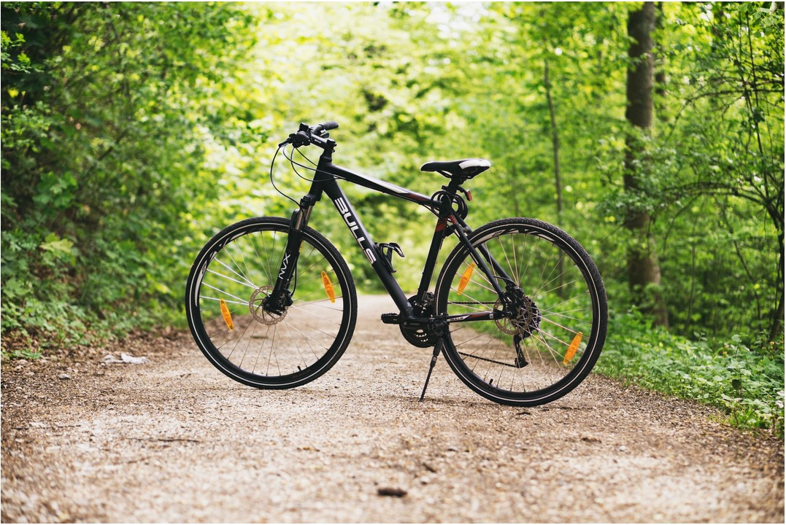

Vicious Cycle products are what you have been waiting for. We sell top-quality cycling equipment and have been doing it for years. Our products have become the supply line of choice and lesser companies have been copying us for some time. Don't be fooled by imitators, Vicious Cycles is the real deal. Don't settle for second best when it comes to your cycling needs, but don't feel you have to raid your savings. Vicious Cycle Products is a name you can put your trust in, at a price you can afford. Of course, custom work is another thing entirely. At Vicious Cycles, we are not interested in a "Race to the ottom" when it comes to creating custom builds. If you're interested in discussing a fully custom or customized build, come down to our store and visit with us to find out what we can really do.We don’t just customize bikes. We also sell stuff we know you’ll dig. Riding is a lifestyle, and we want to help you live your life. You pick the brand(s) that Vicious carries.
At Vicious Cycles, we are committed to providing superior customer service and satisfaction. Our staff will assist you every step of the way, from product selection and ordering to truly custom builds. We’ve been doing this whole custom thing for quite a while, and we've seen some ups and downs, we're loving every moment of it. A proper custom build takes time, and we’ll work closely with you to get it right. From stylish cycles to trusty monster rides, we’ve done them all. Talk with a member of our mechanic's team to discuss your plan, and we'll see your dream realized. Our products have become the supply line of choice and lesser companies have been copying us for some time. Don't be fooled by imitators, Vicious Cycles is the real deal. Don't settle for second best when it comes to your cycling needs, but don't feel you have to raid your savings.